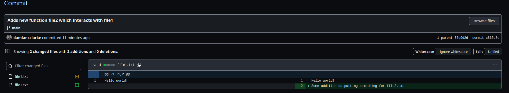

git & GitHub
Data Science for Economics
30 January, 2026
The Problem Version Control Seeks to Resolve 😱

PhD Comics: “Final”.doc
Source: PhD Comics
Why We Need Version Control 🎯
The challenges of managing code and documents:
Without version control:
- Multiple versions scattered everywhere
- Unclear which is the “real” version
- Lost work when files get overwritten
- Impossible to track who changed what
- Collaboration nightmares
- Can’t easily revert mistakes
With version control:
- Single authoritative version ✨
- Complete history of all changes
- Easy to see what changed and when
- Collaboration becomes seamless
- Revert to any previous version
- Experiment without fear
- Industry standard for development
Version control isn’t just for code or documents—it’s for an entire project that evolves over time!
What will we do in this unit?
- Discuss and get to know git
- Work out how git interacts with github
- Discuss markdown languages
- Look at some more advanced themes: how hard is it to build a site together?
Note
Certain elements are covered in this slide, but may be discussed just in passing. Elements marked * are advanced themes.
Let’s go :-)
What is git? 🔧
git is a distributed version control system created by Linus Torvalds (the Linux creator) in 2005
Key concepts:
- Repository (repo): A project folder tracked by git
- Commit: A snapshot of your project at a point in time
- Branch: An independent line of development
- Remote: A version of your repository hosted elsewhere (e.g., GitHub)
git vs GitHub
git = The version control software (runs on your computer) – you must install
GitHub = A website/service for hosting git repositories (plus collaboration tools) – you must make an account
git’s Philosophy 🌳
Distributed version control means:
- Everyone has a complete copy of the project history
- Work offline - you don’t need constant internet connection
- Fast operations - most things happen locally
- Backup by design - multiple complete copies exist
The git workflow:
Working Directory → Staging Area → Local Repository → Remote RepositoryKey advantage: You can experiment locally without affecting others until you’re ready to share!
Installing and Setting Up git 💻
First, check if git is installed:
If you see a version number, you’re good to go! If not, install from git-scm.com
Initial configuration (do this once):
Important!
Use the same email you’ll use for your GitHub account. This links your commits to your GitHub profile.
Verify your configuration:
Creating Your First Repository 🚀
Two ways to start:
Option 1: Start a new project
Option 2: Clone an existing project
The git Workflow: Basic Commands 📊
Essential commands you’ll use constantly:
| Command | Function | Example |
|---|---|---|
git status |
See what’s changed | git status |
git add |
Stage files for commit | git add file.txt |
git commit |
Save a snapshot | git commit -m "Add feature" |
git log |
View commit history | git log |
git diff |
See changes | git diff file.txt |
The three states of files:
- Modified: Changed but not staged
- Staged: Marked for inclusion in next commit
- Committed: Safely stored in repository
Your First Commits 🎬
Let’s walk through a complete example:
# Create a file
echo "Hello world!" > file1.txt
# Check status
git status
# Stage the file
git add file1.txt
# Check status again
git status
# Commit it!
git commit -m "Adds hello world file"
# View history
git logCommit Messages
Write clear, descriptive commit messages! Future you (and your collaborators) will thank you.
✅ Good: “Add function to calculate mean”
❌ Bad: “stuff”, “changes”, “asdf”
Working with Multiple Files 📁
Stage and commit multiple files together:
# Make changes to multiple files
echo "Some new output" >> file1.txt
echo "A new file" > file2.txt
# Stage specific files
git add file1.txt file2.txt
# Or stage all changes
git add .
# Commit them together
git commit -m "Add new function with supporting file"In-Class Activity
- Create a new git repository
- Add 2-3 files to it
- Make some changes
- Practice staging and committing
- Use
git logto see your history
Understanding git log 📜
View your commit history:
Each commit shows:
- Commit hash: Unique identifier (long string of letters/numbers)
- Author: Who made the commit
- Date: When it was committed
- Message: What changed
Useful log options:
Viewing Changes with git diff 🔍
See what’s changed before committing:
# See unstaged changes
git diff
# See staged changes
git diff --staged
# Compare specific commits
git diff commit1 commit2
# Compare with a previous version
git diff HEAD~1 # Compare with 1 commit agoReading diff output
- Lines starting with
-(red) were removed - Lines starting with
+(green) were added - Lines without symbols are context
Introduction to GitHub 🌐
What is GitHub?
GitHub is a cloud-based platform for hosting git repositories with additional features:
Core features:
- Remote repository hosting
- Web-based interface
- Backup and accessibility
- Portfolio of your work
Collaboration features:
- Pull requests for code review
- Issues for tracking bugs/features
- Project management tools
- Team access control
- Documentation (wikis, README)
GitHub is essential for:
- Open source projects
- Team collaboration
- Job applications (your portfolio!)
- Learning from others’ code
Creating a GitHub Account 👤
Steps to get started:
- Go to github.com
- Sign up with your email (use your university email for student benefits!)
- Choose a professional username (employers will see this!)
- Verify your email
Student Benefits
With a university email, you get:
- GitHub Pro for free
- Free private repositories
- Access to GitHub Copilot
- Many other development tools
Apply at: education.github.com
Publishing Your Repository on GitHub 🚀
Create a new repository on GitHub:

Creating a new GitHub repository
Then connect your local repository:
Understanding Push and Pull 🔄
Two-way synchronization:
Push (⬆️): Send local commits to GitHub
When to push:
- After completing a feature
- At end of working session
- Before asking others to review
- To backup your work
Golden Rule
Always git pull before you start working! This prevents conflicts with collaborators’ changes.
Authentication on GitHub 🔐
GitHub requires authentication for pushing code
Options:
- Personal Access Token (PAT) - Recommended
- SSH keys
- GitHub CLI
Creating a PAT:
- GitHub → Settings → Developer settings → Personal access tokens
- Generate new token (classic)
- Select scopes (at minimum:
repo) - Copy token (you’ll only see it once!)
- Use token as password when pushing
Storing credentials
After first use, git can remember your credentials. See GitHub docs for details.
README Files 📄
Every repository should have a README.md
Written in Markdown, it’s the first thing people see on GitHub:
# Project Title
Brief description of what this project does
## Installation
How to install/use
## Usage
Examples of how to use
## Contributing
How others can contribute
## License
What license (if any)Add and commit your README:
Introduction to Markdown 📝
What is Markdown?
Markdown is a lightweight markup language for creating formatted text using plain text
Why learn Markdown?
It’s everywhere:
- GitHub (READMEs, comments, issues)
- Documentation sites
- Jupyter notebooks
- Slack, Discord, WhatsApp
- Static site generators
- This presentation! (via Quarto)
Advantages:
- Easy to read and write
- Plain text (version control friendly!)
- Platform independent
- Quick formatting without mouse
- Converts to HTML, PDF, Word…
Philosophy: Focus on writing, not formatting. Readable even as plain text!
Markdown Basic Syntax 📋
The essentials you’ll use constantly:
| Element | Markdown | Result |
|---|---|---|
| Heading | # H1, ## H2, ### H3 |
Headers (different sizes) |
| Bold | **bold text** |
bold text |
| Italic | *italic text* |
italic text |
| Code | `code` |
code |
| Link | [text](url) |
text |
| Image |  |
Displays image |
| List | - item or 1. item |
Bullet or numbered list |
| Quote | > quote |
Block quote |
Pro Tip
You can nest formatting: **bold _and italic_** produces bold and italic
Markdown: Lists and Code Blocks 💻
Unordered lists:
Ordered lists:
Code blocks:
Inline code: Use single backticks: `variable_name`
Markdown in Practice: README Example 📄
A typical repository README:
# Project Title
Brief description of what this project does and who it's for.
## Installation
```bash
git clone https://github.com/username/repo
pip install -r requirements.txt
```
## Usage
```python
import mypackage
result = mypackage.do_something()
```
## Features
- Feature 1: Does X
- Feature 2: Does Y
- Feature 3: Does Z
## Contributing
Pull requests are welcome! Please see [CONTRIBUTING.md](CONTRIBUTING.md).
## License
This project is licensed under the MIT License - see [LICENSE](LICENSE) for details.This renders very nicely on GitHub (and lots of other places) and is easy to edit!
Visualizing Changes on GitHub 📊
GitHub makes it easy to see what changed:

Visualizing commit changes
Features:
- Line-by-line comparison
- Color coding (red = removed, green = added)
- Easy to review others’ work
- Link to specific lines in discussions
Forking Repositories 🍴
Forking creates your own copy of someone else’s repository
Why fork?
- Contribute to open source projects
- Experiment with others’ code
- Create your own version of a project
- Learn from existing code
The workflow:
- Click “Fork” button on GitHub
- Clone YOUR fork to your machine
- Make changes locally
- Push to YOUR fork
- Open a Pull Request to original repository
Contributing to Others’ Projects 🤝
The standard workflow:
# 1. Fork the repository on GitHub (click "Fork")
# 2. Clone YOUR fork
git clone https://github.com/YOUR-USERNAME/repository
# 3. Make changes
echo "My contribution" > file3.txt
# 4. Stage and commit
git add file3.txt
git commit -m "Add new feature"
# 5. Push to YOUR fork
git push origin main
# 6. Open Pull Request on GitHubThis is how open source development works! 🌟
Pull Requests Explained 🔀
A Pull Request (PR) asks the maintainer to “pull” your changes
The PR process:
- You: Fork → Clone → Edit → Commit → Push → Create PR
- Maintainer: Reviews your changes
- Discussion: Comments, questions, requests for changes
- Decision: Merge (accept) or Close (reject)

Creating a pull request
Reviewing and Merging Pull Requests 🔍
If you maintain a repository, you’ll review PRs (we’ll see this together)
Review process:
- Read the description
- Examine code changes
- Check for conflicts
- Test if possible
- Leave comments or approve
- Merge or request changes
In-Class Activity
- Fork the class repository
- Make a small change (add a file with your name)
- Commit and push to your fork
- Open a Pull Request to the original repository
Syncing Your Fork 🔄
After the maintainer merges changes, your fork is behind:

Repository behind main
To sync:
On GitHub: Click “Sync fork” button
Locally:
This keeps your fork up-to-date with the original repository!
* Branching: Parallel Development 🌿
Branches let you work on features without affecting main code
Why use branches?
- Experiment safely
- Work on multiple features simultaneously
- Keep main branch stable
- Easier code review (one feature per PR)
Branch commands:
git branch # List branches
git branch new-feature # Create branch
git checkout new-feature # Switch to branch
git checkout -b new-feature # Create and switch in one commandBranch naming
Use descriptive names: add-login-feature, fix-bug-123, update-documentation
* Working with Branches 🔀
Typical workflow:
# Create and switch to new branch
git checkout -b new-feature
# Make changes
echo "New feature code" > feature.txt
git add feature.txt
git commit -m "Implement new feature"
# Switch back to main
git checkout main
# Merge the feature
git merge new-feature
# Delete the branch (optional)
git branch -d new-featureThe branch only exists until you merge it into main!
* Pushing Branches to GitHub 🚀
Share your branch on GitHub:
Benefits:
- Backup of work in progress
- Others can see/review before merging
- Can open PR from the branch
- Collaborate on the same feature
On GitHub: You can open a PR from your branch to main without merging locally first!
* Understanding merge 🔗
Merging combines changes from different branches
What happens:
- git combines the changes
- Creates a merge commit (usually)
- Both histories are preserved
Possible outcomes:
- Fast-forward: Clean merge, just moves pointer
- Merge commit: Creates new commit combining both branches
- Conflict: Manual intervention needed (we’ll discuss next)
Dealing with Conflicts ⚠️
Conflicts occur when same lines are edited differently
When you see a conflict:
git merge new-feature
# Auto-merging file.txt
# CONFLICT (content): Merge conflict in file.txt
# Automatic merge failed; fix conflicts and then commit the result.The file will look like:
<<<<<<< HEAD
Your version of the line
=======
Their version of the line
>>>>>>> new-featureTo resolve:
- Open the file
- Decide what to keep
- Remove the conflict markers (
<<<<<<<,=======,>>>>>>>) - Stage and commit
Best Practices for git & GitHub 🌟
Commit practices:
- Commit early and often
- Write meaningful commit messages
- Each commit should be logical unit
- Don’t commit broken code to main
Branch practices:
- Keep main branch stable
- Use feature branches
- Delete branches after merging
- Pull main before creating new branch
Collaboration practices:
- Always pull before starting work
- Push regularly (backup!)
- Use pull requests for review
- Respond to code review comments
- Write good documentation (README)
Common git Commands Cheat Sheet 📋
| Category | Command | Purpose |
|---|---|---|
| Setup | git init |
Initialize repository |
git clone URL |
Clone repository | |
| Basic | git status |
Check status |
git add FILE |
Stage changes | |
git commit -m "msg" |
Commit changes | |
git log |
View history | |
| Remote | git push |
Upload to GitHub |
git pull |
Download from GitHub | |
git remote -v |
View remotes | |
| Branch | git branch |
List branches |
git checkout -b NAME |
Create & switch | |
git merge BRANCH |
Merge branch |
Undoing Changes 🔙
Different ways to undo depending on stage:
Before staging:
After staging but before commit:
After commit:
Nuclear option (dangerous!):
Be Careful!
Some operations (like reset --hard) are destructive and can’t be undone!
.gitignore Files 🙈
Tell git to ignore certain files:
Create a .gitignore file in your repository:
# Ignore compiled files
*.pyc
*.o
# Ignore data files
*.csv
data/
# Ignore environment files
.env
venv/
# Ignore OS files
.DS_Store
Thumbs.db
# Ignore IDE files
.vscode/
.idea/Why ignore files?
- Large data files (use Git LFS instead)
- Sensitive information (passwords, API keys) or personal settings
- Generated/temporary files
Real-World Workflows 💼
Individual researcher:
git pull # Get latest
# Work, make changes
git add .
git commit -m "Analysis update"
git push # BackupTeam project:
GitHub Features Beyond git 🎁
Issues: Track bugs and feature requests
Projects: Organize work with kanban boards
Actions: Automated workflows (testing, deployment)
Pages: Host websites directly from repository
Wikis: Project documentation
Releases: Tag and package versions
Discussions: Community forum
These make GitHub more than just git hosting: it’s actually a complete development platform!
Resources and Further Learning 📚
Official documentation:
Interactive tutorials:
Books:
- “Pro Git” by Scott Chacon (free online)
- git book
Cheat sheets:
Practice Exercises 🏋️
This week, please complete:
- Create a GitHub account if you don’t have one
- Create a new repository on GitHub with README and license
- Clone it locally and add some files
- Practice the basic workflow: add, commit, push
- Fork the class repository and make a contribution (add a file with your name)
- Open a Pull Request to the class repository
- Create a branch, make changes, and merge it
- Explore some popular repositories on GitHub to see real-world examples
Common Mistakes to Avoid 🚫
Don’t:
- Commit large binary files
- Commit sensitive data (passwords!)
- Work directly on main in team projects
- Force push to shared branches
- Commit generated files (builds, logs)
- Use git as a backup system for data
- Forget to pull before working
Do:
- Write clear commit messages
- Commit logical chunks of work
- Pull before starting work
- Push regularly
- Use .gitignore appropriately
- Keep commits focused
- Review changes before committing
Remember
Git can’t protect you from everything! Always be careful with:
git push --forcegit reset --hardgit clean -fd
git in Your Research Workflow 🔬
How economists and data scientists use git:
For code:
- Track analysis scripts
- Version control for packages
- Collaborate on research code
- Share replication files
For papers:
- Version LaTeX files
- Track co-author changes
- Revert to previous versions
- See who wrote what
For data (carefully!):
- Document data cleaning
- Track data transformations
- Version small datasets
- Use Git LFS for larger files
Key Takeaways 🎯
- Version control is essential for any project that evolves over time
- git provides powerful local version control with complete history
- GitHub enables collaboration and serves as backup/portfolio
- The basic workflow is: pull → edit → add → commit → push
- Branches allow experimentation without breaking main code
- Pull Requests enable code review before merging
- Practice makes perfect - start using git for all your projects!
git seems complicated at first, but becomes second nature with practice! 💪
Next Steps 🚀
Additional points to explore:
- Deploying sites
- GitHub Actions 🤖
- Other tools which may be of interest (Jekyll, Quarto, D3.js, plotly)
For now:
- Get comfortable with basic commands
- Practice on your own projects
- Explore GitHub repositories
- Start building your portfolio!
Remember: Every expert was once a beginner. Start small, practice often! 🌱